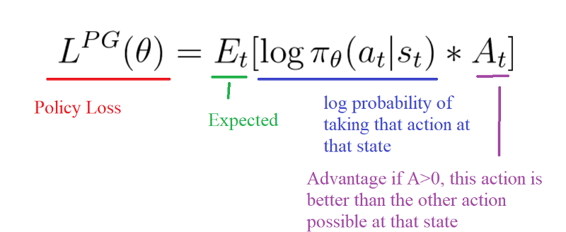
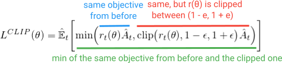
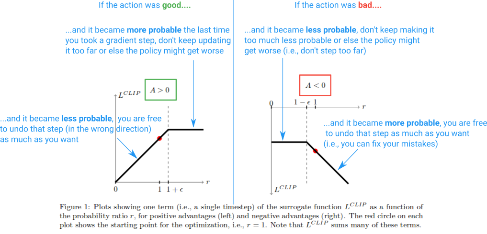
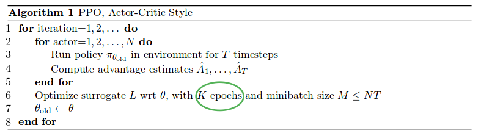

26 April 2019 | Aditya Jain
We have seen Policy Gradient and Actor-Critic methods in the last blog, the idea behind that was taking gradient ascent. We will push our agent to take actions that lead to higher rewards and avoid bad actions. Before discuss problems associated with these methods lets quickly revise these methods from the below link.
Policy Gradient and Actor-Critic Algorithm

The problem with the policy gradient comes with the step size.
1. Too small, the training process was too slow.
2. Too high, there was too much variability in the training.
Other problems are:
3. Training was extremely sensitive to hyparameter tuning.
4. Outlier data can ruin training.
That’s where PPO is useful, the idea is that PPO improves the stability of the Actor training by limiting the policy update at each training step.
The goals of PPO are:
1. Simple and easy to implement
2. Sample efficiency
3. Minimal hyperparameter tuning.
Proximal Policy Optimization :
The route to success in reinforcement learning isn’t as obvious — the algorithms have many moving parts that are hard to debug, and they require substantial effort in tuning in order to get good results. PPO strikes a balance between ease of implementation, sample complexity, and ease of tuning, trying to compute an update at each step that minimizes the cost function while ensuring the deviation from the previous policy is relatively small.
We will look into the following upgrades on Actor-Critic Alogrithm which lead us to PPO:
1. Clipped Surrogate Objective Function
2. Generalized Advantage Estimation
Clipped Surrogate Objective Function
The Clipped Surrogate Objective is a drop-in replacement for the policy gradient objective that is designed to improve training stability by limiting the change you make to your policy at each step.
For vanilla policy gradients (e.g., REINFORCE) --- which you should be familiar with, or familiarize yourself with before you read this --- the objective used to optimize the neural network looks like:
$$ L^{PG}(\theta) = \hat E_t \biggl [ log \pi_\theta(s|a) \hat A_t \biggl ] $$
This is the standard formula where the advantage (A hat) is often replaced with the discounted return. By taking a gradient ascent step on this loss with respect to the network parameters, you will incentivize the actions that led to higher reward. The vanilla policy gradient method uses the log probability of your action (log π(a | s)) to trace the impact of the actions, but you could imagine using another function to do this.
Another such function, uses the probability of the action under the current policy (π(a|s)), divided by the probability of the action under your previous policy (π_old(a|s)). This looks a bit similar to importance sampling if you are familiar with that:
$$ r_t(\theta) = \frac{ \pi_{\theta}(a_t|s_t) }{ \pi_{\theta_{old}}(a_t|s_t) } $$
This r(θ) will be greater than 1 when the action is more probable for your current policy than it is for your old policy; it will be between 0 and 1 when the action is less probable for your current policy than for your old. Now to build an objective function with this r(θ), we can simply swap it in for the log π(a|s) term.
$$ L^{PG}(\theta) = \hat E_t \biggl[ \frac{ \pi_{\theta}(a_t|s_t) }{ \pi_{\theta_{old}}(a_t|s_t) } \hat A_t \biggl] = \hat E_t \biggl [ r_t(\theta) \hat A_t \biggl ] $$
But what would happen here if your action is much more probable (like 100x more) for your current policy? r(θ) will tend to be really big and lead to taking big gradient steps that might wreck your policy.
To deal with this and other issues, we can limit the amount the policy can change and help guarantee that it is monotonically improving. As you may guess, this is what PPO does. It gains the same performance benefits and avoids the complications by optimizing this simple (but kind of funny looking) Clipped Surrogate Objective:

The first term (blue) inside the minimization is the same (r(θ)A), The second term (red) is a version where the (r(θ)) is clipped between (1 - `\epsilon`, 1 + `\epsilon`). (in the PPO paper they state a good value for `\epsilon` is about 0.2, so r can vary between ~(0.8, 1.2)). Then, finally, the minimization of both of these terms is taken (green).
So we see that these clipping regions prevent us from getting too greedy and trying to update too much at once and leaving the region where this sample offers a good estimate.
Here is a diagram summarizing this:

The Clipped Surrogate Objective is just a drop-in replacement you could use in the vanilla policy gradient. The clipping limits the effective change you can make at each step in order to improve stability, and the minimization allows us to fix our mistakes in case we screwed it up.
Generalized Advantage Estimation
This is a way to calculate returns which reduces variances. The smoothing factor is governed by `\lambda` which lies between 0 and 1. `\lambda = 1` have higher accuracy but lower smoothness. PPO paper suggest `\lambda = 0.95`.
Algorithm
- mask is 0 if the state is terminal, otherwise 1
- init `gae=0`; loop backward from last step
- `\partial = r + \gamma V(s') * mask - V(s)`
- `gae = \partial + \gamma \lambda * mask * gae `
- `return(s,a) = gae + V(s)`
- reverse the list of returns back in correct order
Multiple epochs of Policy Updates
Unlike vanilla policy gradient methods, and because of the Clipped Surrogate Objective function, PPO allows you to run multiple epochs of gradient ascent on your samples without causing destructively large policy updates. This allows you to squeeze more out of your data and reduce sample inefficiency.
PPO runs the policy using N parallel actors each collecting data, and then it samples mini-batches of this data to train for K epochs using the Clipped Surrogate Objective function.

More Resources
- Jonathan Hui's blog (PPO explained)
- Dive deeper into Proximal Policy Optimization with Arxiv Insights
- Towards Datascience (PPO)
- Stackoverflow matwilso's answer
- OpenAI blog